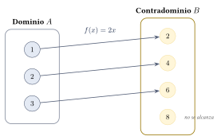
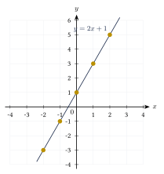
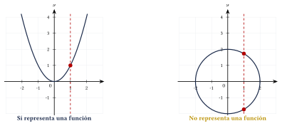

Capítulo 15
Concepto de función
UNAMIPNCENEVAL
Una función describe cómo una cantidad depende de otra. Por ejemplo, el precio de un producto puede depender de su peso, la distancia recorrida puede depender del tiempo y el área de un círculo depende de su radio. En este capítulo estudiarás el concepto de función, sus elementos, su notación, la evaluación de expresiones, el dominio, el rango y el criterio gráfico que permite reconocer funciones.
15.1 Definición de función#
Una función \(f\) de un conjunto \(A\) en un conjunto \(B\) es una regla que asigna a cada elemento \(x\) de \(A\) exactamente un elemento \(y\) de \(B\).
Se escribe:
El elemento \(y\) recibe el nombre de imagen de \(x\) mediante la función \(f\).
La expresión “exactamente un elemento” contiene dos condiciones importantes:
- cada elemento del dominio debe tener una imagen;
- un mismo elemento del dominio no puede tener dos imágenes diferentes.
Sin embargo, dos o más elementos del dominio sí pueden tener la misma imagen.
La condición anterior puede entenderse como una restricción sobre las entradas, no sobre las salidas. Cada entrada debe estar asociada con una sola salida, pero una misma salida puede corresponder a varias entradas.
Por ejemplo, la correspondencia
sí representa una función. Aunque las entradas \(1\) y \(2\) tienen la misma imagen, cada entrada aparece asociada con un único valor.
En cambio, la correspondencia
no representa una función, porque la entrada \(1\) está asociada con dos imágenes diferentes: \(4\) y \(5\).
Cuando una relación se expresa mediante pares ordenados, para determinar si representa una función debe observarse el primer componente de cada par. Si un mismo primer componente aparece con dos segundos componentes diferentes, la relación no es una función.
Sea
una función. Se definen los siguientes conjuntos:
- El dominio, denotado por \(D_f\), es el conjunto \(A\) de valores de entrada para los que la función está definida.
- El contradominio, denotado por \(C_f\), es el conjunto \(B\) establecido como conjunto de posibles valores de salida.
- El rango o imagen, denotado por \(R_f\), es el conjunto de valores que la función toma realmente al evaluar todos los elementos de su dominio.
El rango siempre es un subconjunto del contradominio:
El rango puede coincidir con el contradominio, pero no necesariamente debe hacerlo.
15.2 Representación mediante un diagrama de correspondencia#
Un diagrama de correspondencia permite visualizar una función mediante dos conjuntos y las flechas que relacionan sus elementos. Cada elemento del dominio debe tener exactamente una flecha de salida.
Sea la función
definida por:
Identifica el dominio, el contradominio y el rango.
Ver solución
Evaluamos la función en cada elemento del dominio:
La correspondencia puede representarse mediante el siguiente diagrama:

Por tanto:
El valor \(8\) pertenece al contradominio, pero no al rango, porque ningún elemento del dominio tiene a \(8\) como imagen.
Una correspondencia no es una función si algún elemento del dominio no tiene imagen o si un mismo elemento del dominio tiene dos imágenes diferentes.
En cambio, no hay ningún problema si dos entradas distintas tienen la misma salida. Por ejemplo:
puede ocurrir en una función.
Determina si cada correspondencia representa una función:
Ver solución
La correspondencia \(A\) sí representa una función. Cada elemento de entrada aparece asociado con una sola salida:
Aunque las entradas \(1\) y \(2\) tienen la misma imagen, esta situación no contradice la definición de función.
La correspondencia \(B\) no representa una función, porque la entrada \(2\) está asociada con dos salidas diferentes:
Por tanto, la correspondencia \(B\) no cumple la condición de unicidad de la imagen.
Para decidir si una correspondencia representa una función, conviene revisar las entradas una por una. La pregunta fundamental es:
¿Cada entrada tiene exactamente una salida?
Si la respuesta es afirmativa, la correspondencia es una función. Si alguna entrada no tiene salida o tiene más de una, la correspondencia no es una función.
15.3 Regla de correspondencia y notación#
La regla de correspondencia es la expresión que indica cómo se obtiene el valor de salida a partir del valor de entrada.
En la expresión:
se tiene que:
- \(x\) es la variable independiente;
- \(y\) es la variable dependiente;
- \(f\) es el nombre de la función;
- \(f(x)\) es el valor de la función correspondiente a la entrada \(x\).
La notación \(f(x)\) no representa el producto de \(f\) por \(x\). Se lee “\(f\) de \(x\)” y representa la imagen de \(x\) mediante la función \(f\).
Evalúa la función
en \(x=3\).
Ver solución
Sustituimos \(x\) por \(3\):
Evalúa la función
en \(x=-2\).
Ver solución
Sustituimos \(x\) por \(-2\):
Evalúa la función
en \(x=3\) y en \(x=-1\).
Ver solución
Para \(x=3\):
Para \(x=-1\):
Al evaluar una función, todas las apariciones de la variable deben sustituirse por el valor indicado. Si este valor es negativo, conviene escribirlo entre paréntesis.
Por ejemplo, si:
entonces:
no \(-2^2=-4\).
15.4 Formas de representar una función#
Una función puede representarse de diferentes maneras:
- mediante una descripción verbal;
- mediante una regla algebraica;
- mediante una tabla de valores;
- mediante un conjunto de pares ordenados;
- mediante un diagrama de correspondencia;
- mediante una gráfica en el plano cartesiano.
Considera la función:
con dominio:
Obtén sus pares ordenados y representa algunos de sus valores en el plano cartesiano.
Ver solución
Evaluamos la función:
Los pares ordenados son:
En el plano cartesiano:

Cada valor de \(x\) determina un único valor de \(y\). Esta característica es esencial para que la relación sea una función.
15.5 Dominio de funciones elementales#
Para encontrar el dominio de una función real, deben identificarse las operaciones que puedan dejar de estar definidas.
Funciones polinómicas
Si: \[f(x)=a_nx^n+\cdots+a_1x+a_0,\] entonces: \[D_f=\R.\]
Funciones racionales
Si: \[f(x)=\frac{P(x)}{Q(x)},\] deben excluirse los valores que anulan el denominador: \[Q(x)\neq 0.\]
Funciones con raíces de índice par
Si: \[f(x)=\sqrt{g(x)},\] debe cumplirse: \[g(x)\geq 0.\]
Funciones logarítmicas
Si: \[f(x)=\log_a(g(x)),\] debe cumplirse: \[g(x)>0,\] además de: \[a>0, \qquad a\neq 1.\]
Encuentra el dominio de:
Ver solución
El denominador no puede ser cero:
Por tanto:
En la recta numérica se excluye el valor \(3\):
Encuentra el dominio de:
Ver solución
Factorizamos el denominador:
El denominador se anula cuando:
Por tanto:
En notación de intervalos:
Encuentra el dominio de:
Ver solución
El radicando debe ser mayor o igual que cero:
Por tanto:
En la recta numérica:
Encuentra el dominio de:
Ver solución
El radicando debe ser mayor o igual que cero:
Por tanto:
El dominio es:
En la recta numérica:
15.6 Rango de una función#
Determinar el rango consiste en identificar los valores que puede tomar la variable dependiente.
Determina el rango de:
Ver solución
El cuadrado de todo número real es mayor o igual que cero:
Además, cualquier número no negativo puede obtenerse como el cuadrado de algún número real. Por tanto:
El procedimiento para encontrar el rango depende del tipo de función. Puede requerir:
- analizar su gráfica;
- estudiar los valores posibles de la expresión;
- despejar la variable independiente;
- identificar valores máximos o mínimos.
15.7 Criterio de la recta vertical#
Una gráfica en el plano cartesiano representa una función de \(x\) si y solo si toda recta vertical la interseca en, como máximo, un punto.
Si alguna recta vertical interseca la gráfica en dos o más puntos, la gráfica no representa una función de \(x\).
Determina si las siguientes gráficas representan funciones de \(x\):
- la parábola: \[y=x^2;\]
- la circunferencia: \[x^2+y^2=4.\]
Ver solución
En la parábola \(y=x^2\), cada valor de \(x\) determina un único valor de \(y\). Por esta razón, cualquier recta vertical la interseca en, como máximo, un punto.
En la circunferencia \(x^2+y^2=4\), algunos valores de \(x\) corresponden a dos valores de \(y\). Por ejemplo, cuando \(x=1\):
de donde:
Por tanto, la recta vertical \(x=1\) interseca la circunferencia en dos puntos.
Las gráficas permiten comparar ambas situaciones:

La parábola sí representa una función de \(x\), mientras que la circunferencia no la representa.
El criterio de la recta vertical determina si una gráfica representa a \(y\) como función de \(x\). No debe confundirse con una recta horizontal, que se utiliza para estudiar si una función asigna salidas distintas a entradas distintas.
15.8 Funciones expresadas mediante pares ordenados#
Un conjunto de pares ordenados representa una función si ningún primer componente aparece asociado con dos segundos componentes diferentes.
Por ejemplo:
representa una función.
En cambio:
no representa una función, porque la entrada \(1\) tiene dos imágenes diferentes: \(2\) y \(3\).
15.9 Ejercicios propuestos#
Determina cuál de los siguientes conjuntos representa una función y justifica tu respuesta:
Ver solución
El conjunto \(A\) sí es función: cada valor de \(x\) aparece una sola vez. El conjunto \(B\) no es función, porque el valor \(x = 1\) tiene dos imágenes distintas (\(y = 2\) y \(y = 3\)).
Si
calcula:
Ver solución
Si
calcula:
Ver solución
Determina el dominio de:
Ver solución
El denominador se anula en \(x = -5\). \[D_f = \R - \{-5\}.\]
Determina el dominio de:
Ver solución
\(x^2 - 9 = (x - 3)(x + 3)\). Se anula en \(x = 3\) y \(x = -3\). \[D_f = \R - \{-3, 3\}.\]
Determina el dominio de:
Ver solución
Se requiere \(3x - 6 \geq 0\), es decir, \(x \geq 2\). \[D_f = [2, \infty).\]
Determina el dominio de:
Ver solución
Se requiere \(x^2 - 4 \geq 0\), es decir, \(x \leq -2\) o \(x \geq 2\). \[D_f = (-\infty, -2] \cup [2, \infty).\]
Si
está definida por:
determina su rango.
Ver solución
¿Cuál de las siguientes gráficas no representa una función de \(x\)?
- Una recta con pendiente positiva.
- Una parábola con eje vertical.
- Una circunferencia.
- Una recta horizontal.
Ver solución
La circunferencia no es función porque cualquier recta vertical que pase por su interior la corta en dos puntos.